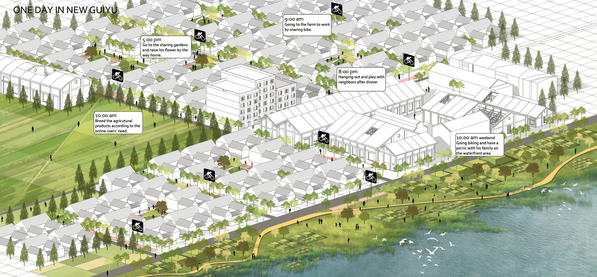

Guiyu Town, Shantou, Guangdong Province, China
The project, titled “Revitalization of Guiyu: Co-evolving between Environment, Industry Development, and People,” is located in Guiyu Town, Shantou, Guangdong Province, China. Once a town rooted in agriculture, Guiyu evolved into a “manufactured landscape” dominated by the manual dismantling of electronic waste (e-waste).
The core objective of the project is to establish a sharing economy system that relies on ecological resource circulation to replace the traditional growth economy, creating a positive and sustainable landscape system.
Guiyu faces significant challenges caused by a “negative system” where industry, the environment, and social relationships are interconnected in a harmful way:
Environmental Degradation: Primitive dismantling techniques, such as open-air incineration and acid extraction, have led to severe soil and water contamination by heavy metals, including lead (Pb), copper (Cu), chromium (Cr), and nickel (Ni).
Industrial Issues: The industry is characterized by low-efficiency technology, simple and polluting dismantling processes, and a heavy reliance on illegal imports and smuggling.
Social Conflicts: There are deep-seated tensions between local residents and migrant workers, a lack of labor rights, and widespread health threats (such as respiratory diseases). Additionally, the community lacks adequate public spaces for social interaction.
The project proposes a comprehensive strategy that uses the landscape as a medium to integrate industry, environment, and people into a sustainable cycle:
Industrial Upgrading: Establishing modern “Disassemble Factories” that feature a “Visible Decontamination Process,” turning traditionally polluting stages into green and transparent production.
Environmental Remediation: Utilizing bio-remediation technologies, such as phytoremediation (using specific plants to absorb heavy metals), soil purification through earthworms and fungi, and water cleansing via multi-stage decontamination ponds.
Social Integration: Designing sharing community gardens, sharing farms, and non-motorized traffic systems (e.g., bike sharing) to increase community interaction. “Interactive decontamination processes” (such as mushroom harvesting in remediated fields) allow people to participate in environmental recovery while building a sense of belonging.
Cross-sector Cooperation: Emphasizing collaboration between the government, enterprises, NGOs, and the local community to maintain a dynamic balance.
Through these interventions, the project envisions the following outcomes:
One Day in New Guiyu: A vision of a future where residents picnic by clean waterfronts, work in sharing gardens, and cycle through green corridors, realizing the goal of “living in industry, working in nature.”
Ecological Balance: A dynamic system where natural energy, human participation, and landscape evolution work together to restore life to contaminated land and ensure pure water and healthy vegetation.
Sustainable Model: The successful transformation of a “negative system” into a “positive circulation system,” sustaining the economic benefits of e-waste recycling while ensuring environmental health and social harmony.